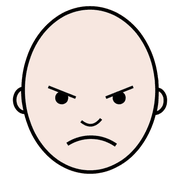
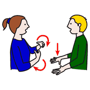
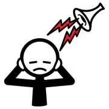
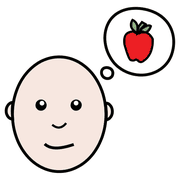
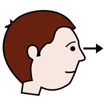
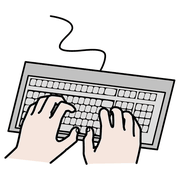

Modulo 5, capire e intervenire
I comportamenti problema
Urlare, scappare, mordere, battere la testa: sono comportamenti che spaventano e stancano. Ma quasi sempre stanno dicendo qualcosa. Il nostro compito è capire che cosa.
non «che cosa
ha?», ma «che
cosa mi dice?»
Un comportamento è un messaggio

arrabbiato
comunicare capire
capireChiamiamo problema, o disadattivo, un comportamento che crea difficoltà alla persona stessa o al suo rapporto con l'ambiente. Si presenta in forme diverse:
Dietro ci sono spesso difficoltà di comunicazione, di comprensione delle situazioni sociali, di percezione. Per molti alunni quel comportamento è la strategia migliore che hanno trovato per affrontare una situazione. Se il problema è comunicativo, allora dobbiamo scoprire la funzione del messaggio.
Una nota sulle stereotipie: movimenti come dondolarsi o sfarfallare le mani spesso aiutano a regolarsi. Si interviene quando sono pericolose o impediscono di partecipare, non solo perché sono insolite.
Che cosa li influenza

rumore stanco
stanco
fame| Variabili | Per esempio |
|---|---|
| Didattiche | Compiti troppo difficili o con molti errori, cambi di routine, istruzioni troppo lunghe o troppo lente. |
| Ambientali | Rumore, luci forti, sedie scomode, troppo caldo o troppo freddo, affollamento. |
| Personali | Fame, sete, sonno, dolore, malessere che l'alunno non riesce a dire. |
| Sociali | Un insegnante nuovo, un supplente, la presenza o l'assenza di un familiare. |
Prima di pensare all'alunno, conviene guardare queste quattro colonne: spesso la soluzione è nell'ambiente.
Quattro domande
 domanda
domanda pensare
pensare
osservarePrima di intervenire, alcune regole: si parte dai comportamenti più pericolosi o più frequenti; si affronta un comportamento alla volta; si insegna sempre un comportamento alternativo. Poi ci si fa quattro domande, in quest'ordine:
- Che funzione ha?A che cosa serve all'alunno.
- Quando succede di più?In quali momenti, luoghi, attività.
- Che cosa posso fare?Un intervento costruito sulla funzione.
- Sta funzionando?Lo verifico con dati, non con impressioni.
misura prima
e misura dopo
Intervenire e verificare
 aiutare
aiutare
scrivere controllare
controllarePer scoprire quando succede di più si usa lo scatterplot: una griglia con le fasce orarie sulle righe e i giorni sulle colonne. Per due o tre settimane, in ogni casella si segna quante volte è comparso il comportamento. Dopo pochi giorni si vedono i momenti critici. La griglia pronta da stampare è nel modulo 9.
L'intervento si costruisce sempre sulla funzione. Per D. potrebbe voler dire: ridurre la copiatura (una fotocopia da completare), insegnargli a chiedere una pausa con un cartellino, rinforzare ogni volta che lo usa.
Per sapere se funziona si torna a misurare frequenza e durata con lo stesso strumento, e si confronta con i dati di partenza.
Prova in classe
 classeosservarescrivere
classeosservarescrivere- Scegli un solo comportamentoDescrivilo in modo operativo, in una riga.
- Raccogli cinque ABCNell'arco di una o due settimane, anche con l'aiuto dei colleghi.
- Formula un'ipotesiQuale funzione ricorre? Quale comportamento alternativo potrebbe svolgere la stessa funzione?